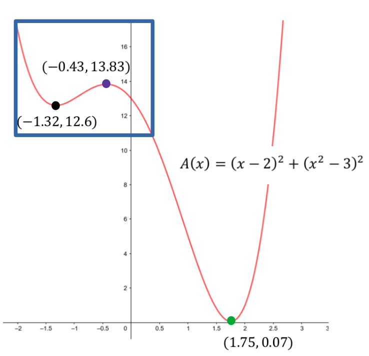
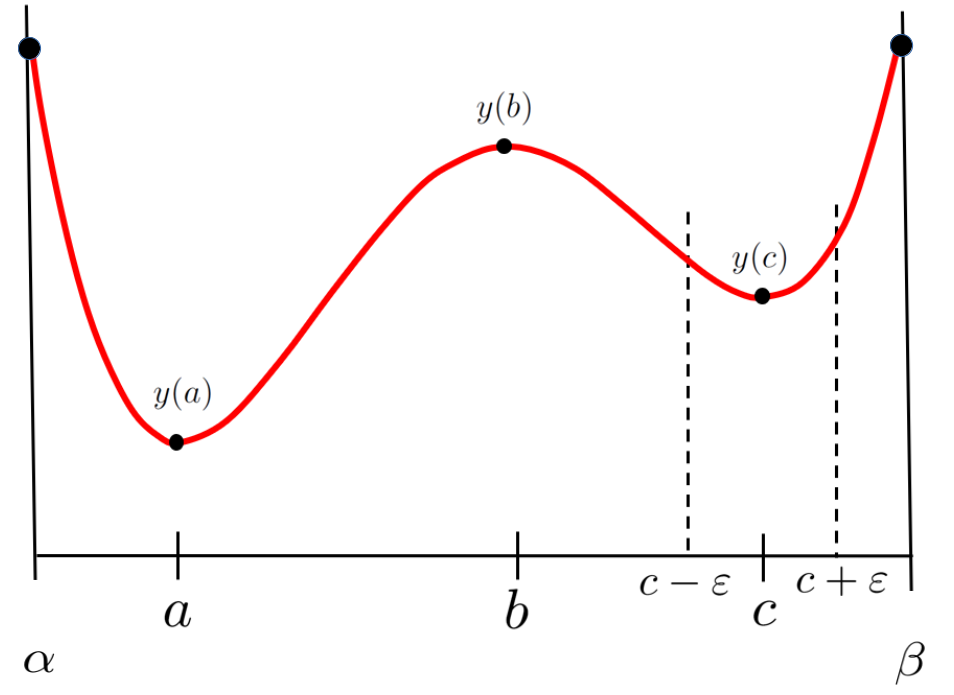

So far in this chapter we’ve relied heavily on our intuition. For instance, in Example 9.2.1 it was very clear that a minimal square exists. Moreover, when we differentiated the objective function we found that \(x=-\frac12\) was the only solution of \(\dfdx{A}{x}=0\text{.}\) So it was reasonable to conclude that the minimum occurs when \(x=-\frac12\text{.}\)
Similarly in Problem 9.2.7 it was intuitively clear that there was both a maximal and a minimal square, so when we found two solutions of \(\dfdx{A}{x}=0\) it made sense to conclude that they correspond to the maximal and minimal squares, respectively.
Unfortunately things are rarely this straightforward. Consider the following example.
Example9.4.1.Constructing a Square on a Parabola.
We would like to find the area of the smallest square which can be constructed with one corner at the point \((2,3)\) and an adjacent corner on the graph of \(y = x^2\text{.}\) This example is very similar to Problem 9.2.1 or Problem 9.2.7 so we will proceed in much the same way. The objective function is the same
\begin{equation}
A = (x-2)^2 + (y-3)^2\tag{9.21}
\end{equation}
but this time the constraint is
\begin{equation}
y = x^2.\tag{9.22}
\end{equation}
In our previous examples we began by differentiating both the objective function and the constraint. This time substitute the constraint \(y=x^2\) into \(A(x)\) to obtain the objective function
in terms of a single variable. We make this change of strategy simply to demonstrate that the two procedures are equivalent. In fact, for this particular problem they are almost identical. For more complex problems you may find that you prefer one strategy or the other.
Problem9.4.2.
Show that \(\dfdx{A}{x}=0\) when \(x \approx1.75\text{,}\)\(x \approx-1.32\) and \(x \approx-0.43\text{.}\) Getting three distinct solutions of \(\dfdx{A}{x}=0\) is quite unexpected in light of our previous work. Can you explain what’s going on here?
To find the minimal square in Problem 9.4.2 we need only substitute the \(x\)-values we found into \(A(x)\text{.}\) Doing this, we get
From these numbers, and from the sketch above we can see that the minimal square seems to be the one whose second corner lies on the parabola at the point (approximately) \((1.75, 3.06)\text{.}\) But those other two solutions of \(\dfdx{A}{x}=0\) are troubling. Do we get a maximal square at \(\left(-0.43,(-0.43)^2\right)\) since \(A(-0.43) \approx 13.83\) is the largest value of \(A(x)\) among the three we’ve identified. And what about the point \((-1.32, (-1.32)^2)\text{?}\) We clearly get neither a minimum nor a maximum there. Why did our solution procedure point to it? This is all very puzzling.
To begin addressing these questions let’s look at the graph of our objective function, \(A(x) = (x-2)^2 + (x^2-3)^2\text{.}\)

Figure9.4.3.
The first coordinate of each point on the graph in Figure 9.4.3 corresponds to the \(x\)–coordinate of the corner of a square which lies on \(y=x^2\text{,}\) and the second coordinate on the graph is the area of that square. Thus the minimal square will correspond to the lowest point on the graph which is the square with a second corner at \(x=1.75\) as we have already concluded. But since the graph continues to rise as we look farther to the right (or left) it should also be clear that there is no maximal square.
The graph in Figure 9.4.3 also explains why our procedure identified the squares with a second corner at both \(x=-1.32\) and \(x=-0.43\) as possible minimal squares as well. When we solve \(\dfdx{A}{x}=0\) we are locating the points on the graph of our objective function where its derivative is zero. That is, points where the slope of the line tangent is horizontal. Fermat’s Theorem 9.1.1 only assures us that if \(A(x)\) has an extremum at \(x=a\) then \(\dfdxat{A}{x}{a}=0\text{.}\) In particular it does not tell us that there are no other values of \(x\) where \(\dfdx{A}{x}=0\text{.}\)
The problem here is that we have not been precise in our language. When we say “maximum” (or minimum) in ordinary speech we mean “the largest one,” and it is clear that there can only be one “largest.”
However, if we confine our attention to the part of Figure 9.4.3 inside the blue rectangle we see that the point at \((-1.32, 12.6)\) is a minimum locally and the point at \((-0.43,
13.83)\) is a maximum locally. By “locally” we mean “if we restrict our attention to the graph near those two points.” For our current purpose we confine our attention to the inside of the blue box in Figure 9.4.3. We will need to be very careful to distinguish between local and global extrema in the future.
\begin{equation*}
y=x^2, \text{ with domain }\RR.
\end{equation*}
But suppose we change the constraint to
\begin{equation}
y=x^2, \text{ with domain }-2\le x\le 0.5,\tag{9.24}
\end{equation}
so that the domain is just the part of the real line inside the blue rectangle above.
We now have a different problem because the only part of the graph we are interested in is the piece inside the blue rectangle. The global minimum no longer occurs at \(x\approx1.75\) because \(1.75\) is not in the problem domain, \(x\approx1.75\) simply doesn’t exist in the domain of the function \(y=x^2\text{,}\) with domain; \(-2\le x\le 0.5\text{.}\) However, since \(x=-0.43\) and \(x=-1.32\) are in the domain they still correspond to a local maximum and a local minimum, respectively. Are they also the global maximum and minimum? Give this question some thought and take your best guess. We will return to it in Problem 9.5.22.
The existence of local extrema really complicates things for us because it means we have to find all of the local extrema and then figure out which of them, if any, are also global extrema. If we don’t get organized we’re likely to have a lot of trouble keeping this all straight.
In the sketch below \(y(a)\) is the global minimum of \(y\) since it is the lowest point on the graph of \(y(x)\text{,}\) whereas \(y(c)\) is a local minimum because it is the lowest point on the graph when the domain of \(y(x)\) is restricted to the interval \((c-\eps, c+\eps)\) (between the dashed lines). In this sketch the global maximum of \(y(x)\) occurs at the endpoints of the interval, \(\alpha\) and \(\beta\text{.}\) The fact that extrema can also occur at endpoints is another complicating detail we will come back to shortly.

Since the domain of the function affects the location of the extrema a definition of extrema will need to reference the function’s domain. It is easy to get lost in the technicalities so keep Example 9.4.1 in mind as we proceed.
We have the following definitions.
Definition9.4.4.Global Minimum.
Suppose that \(g\) is a number in the domain of \(y\) such that \(y(g)\le y(x)\) for every \(x\) in the domain of \(y\text{.}\) Then \(y(g)\) is the global minimum of \(y\text{.}\)
Drill9.4.5.
Provide a definition of Global Maximum modeled on Definition 9.4.4.
To define local extrema we’ll need the concept of an open interval. You are probably already familiar with this concept but it is worth our time and effort to digress briefly to be sure we understand it thoroughly.
DIGRESSION: Interval Notation.
An interval is a contiguous set of real numbers. For example, the set of numbers strictly between zero and one is an interval. Because the endpoints are not included it is called an open interval and is denoted by \((0,1)\text{.}\) Think of this notation as an abbreviation of the the two inequalities
\begin{equation*}
0\lt x \text{ and } x\lt1
\end{equation*}
This is also abbreviated sometimes as \(0\lt x\lt1\text{.}\)
Be careful. The “ordered pair” notation can be ambiguous. Without some context it is not clear whether the notation \((a,b)\) represents the open interval satisfying the inequalities \(a\lt x \lt b\text{,}\) or the point \((a,b)\) in the \(x\)–\(y\) plane.
If we include the endpoints we have a closed interval, denoted by the ordered pair \([a,b]\text{.}\) Think of this as an abbreviated form of the two inequalities
\begin{equation*}
a\le x \text{ and }x\le b.
\end{equation*}
(This is also abbreviated sometimes as \(a\le x\le b\text{.}\))
Drill9.4.6.
Re-express each of the following intervals using inequalities and state whether it is open, closed, or neither.
\(\displaystyle (-1,1)\)
\(\displaystyle [-1,1]\)
\(\displaystyle [-10,25)\)
\(\displaystyle (-32,100]\)
If we want to identify the interval of all numbers greater than, say \(x=1\) there is no right endpoint of the interval. Rather than writing this out in words every time we encounter it (which will be often) we force our notation to adapt to our need and denote this interval as: \((1, \infty)\text{.}\) Similarly the interval of all numbers less than or equal to \(7\) is denoted: \((-\infty, 7]\text{.}\) We’ve been using the symbol “\(\RR\)” to denote all real numbers, but since the set of all real numbers is a (very large) interval we will sometimes use the interval notation, \((-\infty, \infty)\) as well.
Do not be fooled by this. “Infinity” (\(\infty\)) is not a number and cannot be treated like one. This is just a notational shorthand that we use for our own convenience.
END OF DIGRESSION
After that digression we are now able to succinctly define local extrema.
Definition9.4.7.Local Minimum.
Suppose that \(l\) is a number in the domain of \(y(x)\text{.}\) Then \(y(l)\) is a local minimum of \(y\) if there is an open interval, \(I\text{,}\) such that \(y(l)\le
y(x)\) for every \(x\) which is in both the interval \(I\) and the domain of \(y(x)\text{.}\)
Drill9.4.8.
Provide a definition of Local Maximum modeled on Definition 9.4.7.
Problem9.4.9.
Explain why we can find a global maximum (minimum) by finding all of the local maxima (minima) and selecting the largest (smallest) among these.